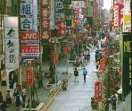

呂清夫 撰文

我們的官方似乎常想給民眾一個驚奇，那就是想在一夜之間，在一個城市之中突然造出一個龐然大物。這從台灣頭到台灣尾都可以找到例子，如高雄曾經想造什麼自由男神（？），基隆也要建造媽祖巨像，如今台北又要建個花開富貴—號稱世界最高的摩天大樓，樓高一百廿八層，如果問，為什麼是一百廿八層呢？據說只因為芝加哥將要完成的世界第一高樓是一百廿五樓。但是又有消息傳出，日本已在興建一百五十層的高樓，那麼，我們是否又要建個一百五十一層呢？如果是這樣的話，那麼房子不是就像童話故事中的傑克「碗豆樹」嗎？將要無止境的爬上天嗎？又據說，「花開富貴」將要成為台北的市標，表示台北的高格文化。其實，要知道一個城市是否有文化，我們只要往街頭一站，如果覺得心曠神怡的話，即具有某種的文化水準，如果覺得彷彿置身違建之林，而且要眼觀八方，以免車禍，要蒙上嘴巴，以免污染，這種城市實在不談也罷。如果在這令人心神不寧的城市之中，又突然冒出一個摩天大樓，那恐怕只有令人更加不安而已。市標也者乃是一個城市的「家珍」，最近有家報紙便如數家珍地把台北的名勝古蹟列了出來，準備給台北選個市標。有人選來選去，硬是捉襟見肘，最後只好歸結到台北市文化的貧血。如果是個文化都市，那麼家珍是數不完的，即使年輕的紐約，也有自由女神、帝國大廈、甘迺迪機場、聯合國總部……，古老的巴黎更不用說，如聖母院、凱旋門、艾菲爾鐵塔、龐畢度文化中心……，任何一件拿出來都是響叮噹，而這些建造物在建造當初，也沒有一件是為著成為市標而建的，自稱市標未必是市標，正如自稱專家未必是專家，市標與專家一樣，都是由別人來封的，而且是長期觀察的結果。市標可能是個歷史的古蹟，也可能是個建築的名作，或者特殊的自然物。就古蹟而言，如果不善維護，古蹟便只剩遺蹟，當我們看到龍山寺的煥然一新，粗糙俗惡，看到北門的強龍壓境，風燭飄搖，那還算古蹟嗎？文化資產保存法的慢半拍、不周全，乍看無關緊要，每到需要古蹟的時候便永遠來不及了。就建築名作而言，不知台北有嗎7我們蓋房子的興趣奇大，七號公園之中，榮星花園之中，都有人想蓋它一票，公共工程動輒號稱遠東第一大，摩天大樓自要世界第一高，但是更重要的應在於它是否是一件世界名作，這才是作為市標的要件。至少，像自由男神也要先和紐約的自由女神比一比，媽祖巨像更要先和廈門的鄭成功像比一比，見個高下！看看國外的例子，我們知道市標並非一天、一人造成的。在人文薈萃的巴黎，蓋一座龐畢度文化中心，竟要動員全世界的建築智慧，亦即開放全球建築師參加競圖，當年前往競圖的作品竟然多達六百八十件，在這設計圖海之中，自有臥虎藏龍之作。當地建築師如有實力，自可脫穎而出，並可揚名世界，因為競圖活動本身就是最好的國際宣傳。只是後來雀屏中選的卻不是法國人，而是義大利人皮雅諾和英國人羅哲士的合作案。不僅設計者，他們連文化中心的主任都是瑞典人富爾頓。這些開放的作法並未使他們動搖國本，只有使他們更像文化大國。不僅巴黎，多倫多市政府、雪梨歌劇院、芝加哥論壇報等建築工程也是向全世界徵求競圖的，這可以說是建築界的兵家常事。那麼，今天我們有這麼多、這麼大的公共建築，何妨開放一點給建築師競圖，當世界各地五花八門的競圖擺在國人面前之時，除了國內外專家在評審之餘，納稅人也可以試著參與圈選，就像富裕的消費者面對著精緻的華洋百貨一樣，可以大開眼界，這比大人圈選台北的名勝古蹟，或小孩圈選區運動物的標幟，應該更覺興奮、更覺尊貴，更覺台北的未來不是夢吧！
原載1990.3.5.自立早報，收入1994年，呂清夫著「現代都市叢林派」